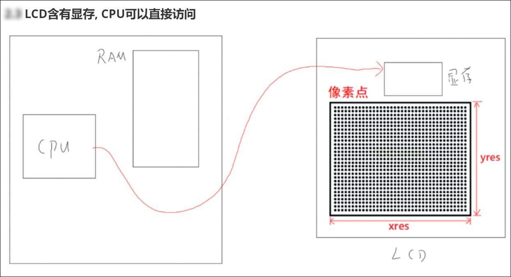

1.设备系统_设计思路
1.1 总体框架
构造一个设备子系统来屏蔽底层硬件的差异，方便移植

1.1.1 驱动程序和HAL库区别
硬件和软件之间的藕合太严重了，如果硬件修改，随之软件也必须进行大幅度调整
软件和硬件之间插入一层驱动程序，保证软件的接口不改变，驱动程序随便变化，使得应用程序可以在不同的硬件上运行。
1.2 怎么访问设备
1.2.1 裸机里怎么访问设备
使用HAL库，或者厂家自己封装的库，甚至自己编写代码直接访问寄存器。
1.2.2 FreeRTOS怎么访问设备
FreeRTOS中没有驱动程序框架，它访问设备时方法跟裸机一样。
1.2.3 RT-Thread怎么访问设备
RT-Thread可以使用2中方法访问设备：

所谓"驱动框架"，就是事先定义好的接口函数，你要添加新设备就必须实现这些接口函数。
好处是：无论硬件怎么改，驱动程序的接口不变，上面的应用程序也就不需要改变。
"I/O设备管理"接口如下：

应用程序通过标准的接口来访问设备：rt_device_find/rt_device_open/rt_device_read/rt_device_write等等。
1.2.4 Linux下怎么访问设备
Linux系统中，APP和驱动程序严格分离开：

1.3 有必要统一设备的访问吗？
先把设备子系统分层：
至少有2层：虚线上下
对于开发应用程序的人：
他不关心LED使用哪个GPIO引脚
他不关心GPIO是输出高还是低来控制LED
他不关心open什么、read/write什么
我们不应该要求他：
甚至不应该要求他去理解你抽象出来的某个结构体
虽然我们freertos中提供了统一的接口函数，但是这个统一能在freertos内部实现，所以我们很有必要提供更高层次的API，以LED为例：
提供这些统一的接口不仅仅为了屏蔽操作系统的差别，屏蔽硬件的不一致也为了实现专业知识的隔离。
1.4 设计原则：驱动和应用分开
在Linux驱动开发中，有一句话：驱动只提供功能，不提供策略。
什么意思呢？就是各司其职，不要越界。
以LCD的使用为例，可以分为3层：

驱动程序：
库函数/功能函数：
提供显示字符、显示图片的功能
但是显示什么字符、在哪显示，这不关我的事
APP：
使用库函数来显示字符、显示图片
我甚至不需要看驱动程序
我们实现各类子系统时，要划分层次的时候，也要理清楚：
有哪些功能
这些功能怎么细分？得到层次
每个层次各司其职，不要越界
1.5 设计思路
使用面向对象的思想，对于每一种设备，抽象出一个结构体，结构体里有设备相关的函数指针。
不同设备，不强求统一，不强求用一个结构体类型，支持所有设备。
编写函数时，要注意：
2.设备系统_实现LED设备
本节源码：在GIT仓库中
rtos_doc_source\RTOS培训资料\
01_项目1_基于HAL库实现智能家居\
05_项目1_基于HAL库的智能家居\1_项目源码\10_7_device_led
2.1 总体框架

2.2 LED有什么功能
2.3 抽象出结构体
2.3.1 如何抽象出结构体
首先要明白怎么描述一个对象
本质：概括出它的属性，抽象出它的功能。
#define LED_WHITE 0
#define LED_BLUE 1
#define LED_GREEN 2
typedef struct LEDDevice {
int which;
int (*Init)(struct LEDDevice *ptLEDDevice);
int (*Control)(struct LEDDevice *ptLEDDevice, int iStatus);
void (*SetColor)(struct LEDDevice *ptLEDDevice, int iColor);
void (*SetBrightness)(struct LEDDevice *ptLEDDevice, int iBrightness);
}LEDDevice, *PLEDDevice;
2.4 编程
我们把LED设备分为4层：
2.4.1 设备层
static int LEDDeviceInit(struct LEDDevice *ptLEDDevice)
{
return KAL_LEDDeviceInit(ptLEDDevice);
}
static int LEDDeviceControl(struct LEDDevice *ptLEDDevice, int iStatus)
{
return KAL_LEDDeviceControl(ptLEDDevice, iStatus);
}
static LEDDevice g_tLEDDevices = {
{LED_WHITE, LEDDeviceInit, LEDDeviceControl},
{LED_BLUE, LEDDeviceInit, LEDDeviceControl},
{LED_GREEN, LEDDeviceInit, LEDDeviceControl},
};
PLEDDevice GetLEDDevice(int which)
{
if (which >= LED_WHITE && which <= LED_GREEN)
return &g_tLEDDevices[which];
else
return NULL;
}
2.4.2 内核抽象层
#include <led_device.h>
int KAL_LEDDeviceInit(struct LEDDevice *ptLEDDevice)
{
/* 对于裸机/FreeRTOS */
return CAL_LEDDeviceInit(ptLEDDevice);
/* 对于RT-Thread */
/* 对于Linux */
}
int KAL_LEDDeviceControl(struct LEDDevice *ptLEDDevice, int iStatus)
{
/* 对于裸机/FreeRTOS */
return CAL_LEDDeviceControl(ptLEDDevice, iStatus);
/* 对于RT-Thread */
/* 对于Linux */
}
2.4.3 芯片抽象层
#include <led_device.h>
int CAL_LEDDeviceInit(struct LEDDevice *ptLEDDevice)
{
/* 对于hal */
/* 已经在MX_GPIO_Init初始化了引脚 */
return 0;
}
int CAL_LEDDeviceControl(struct LEDDevice *ptLEDDevice, int iStatus)
{
/* 对于hal */
return HAL_LEDDeviceControl(ptLEDDevice, iStatus);
}
2.4.4 硬件操作层
/*
* 函数名：int HAL_LEDDeviceControl(struct LEDDevice *ptLEDDevice, int iStatus)
* 输入参数：ptLEDDevice-哪个LED
* 输入参数：iStatus-LED状态, 1-亮, 0-灭
* 输出参数：无
* 返回值：0-成功, -1: 失败
*/
int HAL_LEDDeviceControl(struct LEDDevice *ptLEDDevice, int iStatus)
{
if (!ptLEDDevice)
return -1;
switch (ptLEDDevice->which)
{
case LED_WHITE:
{
HAL_GPIO_WritePin(WHITE_GPIO_Port, WHITE_Pin, !iStatus);
break;
}
case LED_BLUE:
{
HAL_GPIO_WritePin(BLUE_GPIO_Port, BLUE_Pin, !iStatus);
break;
}
case LED_GREEN:
{
HAL_GPIO_WritePin(GREEN_GPIO_Port, GREEN_Pin, !iStatus);
break;
}
default:
return -1;
}
return 0;
}
3.设备系统_单元测试
本节源码：在GIT仓库中
rtos_doc_source\RTOS培训资料\
01_项目1_基于HAL库实现智能家居\
05_项目1_基于HAL库的智能家居\1_项目源码\10_8_device_led_unittest
3.1 编译程序
编译程序时，最多的警告就是：
..\smartdevice\kal\kal_time.c(16): warning: #223-D: function "CAL_GetTime" declared implicitly
在.c文件中使用了某些函数，但是没有这些函数的声明。
解决方法是：
从第1个警告、第1个错误开始解决，修改完第1个警告/错误后就重新编译。
3.2 编写测试代码
代码：led_test.c
/**********************************************************************
* 函数名称： led_test
* 功能描述： 设备系统LED设备单元测试函数
* 输入参数： 无
* 输出参数： 无
* 返 回 值： 无
* 修改日期 版本号 修改人 修改内容
* -----------------------------------------------
* 2021/09/27 V1.0 韦东山 创建
***********************************************************************/
void led_test(void)
{
PLEDDevice p1 = GetLEDDevice(LED_WHITE);
PLEDDevice p2 = GetLEDDevice(LED_BLUE);
PLEDDevice p3 = GetLEDDevice(LED_GREEN);
p1->Init(p1);
p2->Init(p2);
p3->Init(p3);
while (1)
{
p1->Control(p1, 1);
p2->Control(p2, 1);
p3->Control(p3, 1);
KAL_Delay(500);
p1->Control(p1, 0);
p2->Control(p2, 0);
p3->Control(p3, 0);
KAL_Delay(500);
}
}
3.3 上机实验
三个灯同时闪烁

3.4 1-3节问题汇总
问：我记得输入子系统中您并不推荐用宏开关，而是用结构体来支持不同类型，当初还举了lcd的例子。
答：对于这个问题，什么时候使用宏开关 ？什么时候使用结构体？
问题的核心在于：是否同时支持？
对于一个编译好的程序，我们不会同时支持裸机、支持RTOS。
所以我们可以使用宏开关，来启动一部分代码，禁止另一部分代码，不占用多余Flash。
而程序中，要支持多种输入设备，要支持多种LCD，比如程序不变，换其它规格的LCD，最好是使用链表。
因此，要同时支持，就用结构体；事先就定死只支持一个，就用宏开关。
问：比如一个标准库的gpio初始化是传一个整形的instance和一个pin，
然后hal库的gpio初始化是要传gpio寄存器的首地址和pin，
那cal对外封装的结构体是要封装三个参数吗？整形instance，首地址，pin？
答： 不用，这里要有“翻译”，举个例子：
4.设备系统_显示设备结构体抽象
本节源码：在GIT仓库中
rtos_doc_source\RTOS培训资料\
01_项目1_基于HAL库实现智能家居\
05_项目1_基于HAL库的智能家居\1_项目源码\10_9_device_display_struct
4.1 显示设备的硬件概括
4.1.1 LCD显示原理
什么是LCD？就是多行多列的像素：
怎么控制LCD上每个像素的状态？
要注意的是，LCD可能自带显存，也可能不带有显存(要使用LCD的话，就需要在系统内存中分配显存)。

有三种类型的LCD。
4.1.2 LCD含有显存, CPU通过I2C访问
很多I2C、SPI接口的屏幕，本身是含有显存的。要在LCD上显示文字、图片，就需要网显存里写入数据。
程序通过I2C接口写显存。

4.1.3 LCD含有显存, CPU可以直接访问
有些LCD含有显存，并且CPU可以直接访问显存：就像访问一般内存一样访问显存。
我们只需要写数据到显存即可。

4.1.4 LCD没有显存, LCD控制器从内存得到数据
很多TFT LCD本身是没有显存的，那么数据保存在哪里？可以在系统内存里分配一块空间，它就是显存。
设置好LCD控制器后，它就会自动从显存取出数据、发送给LCD。
我们只需要写数据到显存即可。

4.1.5 差别在哪？
对于软件来说，这3种LCD都有显存，第1种无法直接写显存；第2、3种可以直接写显存。
能否统一？
对于第1种LCD，能否也直接写显存？可以：
4.2 显示设备的结构体抽象
怎么抽象出一个显示设备？
结构体如下：
typedef struct DispayDevice {
char *name; //名字
void *FBBase; //显存基地址，Frame帧
int iXres; //X分辨率
int iYres; //X分辨率
int iBpp; //每个像素用几位来表示
int (*Init)(struct DispayDevice *ptDev);//初始化函数
void (*Flush)(struct DispayDevice *ptDev);//刷新函数，将显存数据刷新到屏幕
}DispayDevice, *PDispayDevice;
5.设备系统_实现显示设备
本节源码：在GIT仓库中
rtos_doc_source\RTOS培训资料\
01_项目1_基于HAL库实现智能家居\
05_项目1_基于HAL库的智能家居\1_项目源码\10_10_device_display_oled
// 需要用到OLED的代码
rtos_doc_source\RTOS培训资料\
01_项目1_基于HAL库实现智能家居\
03_项目必备的HAL库基础\1_项目源码\4_OLED
5.1 显示设备的结构体抽象
怎么抽象出一个显示设备？
结构体如下：
typedef struct DispayDevice {
char *name;
void *FBBase; /* CPU能直接读写的显存 */
int iXres; /* X方向分辨率 */
int iYres; /* Y方向分辨率 */
int iBpp; /* 每个像素使用多少个像素 */
int (*Init)(struct DispayDevice *ptDev); /* 硬件初始化 */
void (*Flush)(struct DispayDevice *ptDev); /* 把FBBase的数据刷到LCD的显存里 */
/* 设置FBBase中的数据, 把(iX,iY)的像素设置为颜色dwColor
* dwColor的格式:0x00RRGGBB
*/
int (*SetPixel)(struct DispayDevice *ptDev, int iX, int iY, unsigned int dwColor);
}DispayDevice, *PDispayDevice;
5.2 程序层次

5.3 编程
核心是底下的oled_device.c，它要构造出一个DisplayDevice。
我们先实现它，再去考虑管理的事情。
5.3.1 构造DisplayDevice
文件：oled_device.c
static DispayDevice g_tOLEDDevice = {
"OLED",
g_OLEDFramebuffer,
128,
64,
1,
OLEDDeviceInit,
OLEDDeviceFlush,
OLEDDeviceSetPixel
};
5.3.1.1 Init和Flush
OLEDDeviceInit和OLEDDeviceFlush比较简单，都是调用下面KAL层的函数：
/**********************************************************************
* 函数名称： OLEDDeviceInit
* 功能描述： 初始化OLED硬件
* 输入参数： ptDev-哪个显示设备
* 输出参数： 无
* 返 回 值： 0-成功
* 修改日期 版本号 修改人 修改内容
* -----------------------------------------------
* 2021/09/29 V1.0 韦东山 创建
***********************************************************************/
static int OLEDDeviceInit(struct DispayDevice *ptDev)
{
/* 初始化OLED硬件 */
return KAL_OLEDDeviceInit(ptDev);
}
/**********************************************************************
* 函数名称： OLEDDeviceFlush
* 功能描述： 把临时显存的数据, 刷到LCD的显存去
* 输入参数： ptDev-哪个显示设备
* 输出参数： 无
* 返 回 值： 无
* 修改日期 版本号 修改人 修改内容
* -----------------------------------------------
* 2021/09/29 V1.0 韦东山 创建
***********************************************************************/
static void OLEDDeviceFlush(struct DispayDevice *ptDev)
{
/* 把Framebuffer g_OLEDFramebuffer的数据搬到OLED自带的显存里 */
KAL_OLEDDeviceFlush(ptDev);
}
5.3.1.2 SetPixel函数
需要计算的就是，(iX, iY)在显存里哪个位置、哪个bit，
代码如下：
/**********************************************************************
* 函数名称： OLEDDeviceSetPixel
* 功能描述： 在显存中设置(iX,iY)像素的颜色
* 输入参数： ptDev-哪个显示设备
* 输入参数： iX-X坐标
* 输入参数： iY-Y坐标
* 输入参数： dwColor-颜色
* 输出参数： 无
* 返 回 值： 0-成功
* 修改日期 版本号 修改人 修改内容
* -----------------------------------------------
* 2021/09/29 V1.0 韦东山 创建
***********************************************************************/
static int OLEDDeviceSetPixel(struct DispayDevice *ptDev, int iX, int iY, unsigned int dwColor) /* 0x00RRGGBB */
{
unsigned char *buf = ptDev->FBBase;
int page;
unsigned char *byte;
int bit;
if (iX >= ptDev->iXres || iY >= ptDev->iYres)
return -1;
page = iY / 8; /*得到页信息*/
byte = buf + page * 128 + iX; /*得到像素地址*/
bit = iY % 8; /*得到列信息*/
if (dwColor)
*byte |= (1<<bit);
else
*byte &= ~(1<<bit);
return 0;
}
5.3.2 KAL层
文件：kal_oled_device.c
核心思路就是根据配置项，调用对应的函数。代码如下：
/**********************************************************************
* 函数名称： KAL_OLEDDeviceInit
* 功能描述： 内核抽象层的函数,初始化OLED硬件
* 输入参数： ptDev-哪个显示设备
* 输出参数： 无
* 返 回 值： 0-成功
* 修改日期 版本号 修改人 修改内容
* -----------------------------------------------
* 2021/09/29 V1.0 韦东山 创建
***********************************************************************/
int KAL_OLEDDeviceInit(struct DispayDevice *ptDev)
{
/* 初始化OLED硬件 */
#if defined (CONFIG_NOOS)
return CAL_OLEDDeviceInit(ptDev);
#elif defined (CONFIG_FREERTOS)
return FreeRTOS_OLEDDeviceInit(ptDev);
#elif defined (CONFIG_RTTHREAD)
return RTThread_OLEDDeviceInit(ptDev);
#endif
}
/**********************************************************************
* 函数名称： OLEDDeviceFlush
* 功能描述： 内核抽象层的函数, 把临时显存的数据, 刷到LCD的显存去
* 输入参数： ptDev-哪个显示设备
* 输出参数： 无
* 返 回 值： 无
* 修改日期 版本号 修改人 修改内容
* -----------------------------------------------
* 2021/09/29 V1.0 韦东山 创建
***********************************************************************/
void KAL_OLEDDeviceFlush(struct DispayDevice *ptDev)
{
/* 把Framebuffer g_OLEDFramebuffer的数据搬到OLED自带的显存里 */
#if defined (CONFIG_NOOS)
CAL_OLEDDeviceFlush(ptDev);
#elif defined (CONFIG_FREERTOS)
FreeRTOS_OLEDDeviceFlush(ptDev);
#elif defined (CONFIG_RTTHREAD)
RTThread_OLEDDeviceFlush(ptDev);
#endif
}
5.3.3 CAL层
文件：cal_oled_device.c
核心思路就是根据配置项，调用对应的函数。代码如下：
/**********************************************************************
* 函数名称： CAL_OLEDDeviceInit
* 功能描述： 芯片抽象层的函数,初始化OLED硬件
* 输入参数： ptDev-哪个显示设备
* 输出参数： 无
* 返 回 值： 0-成功
* 修改日期 版本号 修改人 修改内容
* -----------------------------------------------
* 2021/09/29 V1.0 韦东山 创建
***********************************************************************/
int CAL_OLEDDeviceInit(struct DispayDevice *ptDev)
{
/* 初始化OLED硬件 */
#if defined (CONFIG_SUPPORT_HAL)
// 1. 重新初始化I2C的引脚
I2C_GPIO_ReInit();
// 2. 初始化OLED
OLED_Init();
return 0;
#elif
return NOHAL_OLEDDeviceInit(ptDev);
#endif
}
/**********************************************************************
* 函数名称： CAL_OLEDDeviceFlush
* 功能描述： 芯片抽象层的函数, 把临时显存的数据, 刷到LCD的显存去
* 输入参数： ptDev-哪个显示设备
* 输出参数： 无
* 返 回 值： 无
* 修改日期 版本号 修改人 修改内容
* -----------------------------------------------
* 2021/09/29 V1.0 韦东山 创建
***********************************************************************/
void CAL_OLEDDeviceFlush(struct DispayDevice *ptDev)
{
/* 把Framebuffer g_OLEDFramebuffer的数据搬到OLED自带的显存里 */
#if defined (CONFIG_SUPPORT_HAL)
OLED_Copy(ptDev->FBBase);
#elif
NOHAL_OLEDDeviceFlush(ptDev);
#endif
}
5.3.4 硬件操作
一起讲HAL库时写过程序，参考代码：
// 需要用到OLED的代码
rtos_doc_source\RTOS培训资料\
01_项目1_基于HAL库实现智能家居\
03_项目必备的HAL库基础\1_项目源码\4_OLED
5.4 显示设备晚课问题汇总
问：课程中抽象的LCD结构体，里面void *FBBase;为什么使用void *?
答：之所以写成 void *, 是因为他可以直接赋给给任何的指针： char *buf = FBBase; short *buf = FBBase;
也可以接受任何的指针： char *buf; FBBase = buf; short *buf; FBBase = buf;
对于8bbp的情况, 我们操作一个数据时就是unsigned char *
对于16bbp的情况, 我们操作一个数据时就是unsigned short *
对于32bbp的情况, 我们操作一个数据时就是unsigned int
问：课程中display的设备最终是调用到oled底层的接口的，很疑惑，为什么不是对Oled进行抽象，oled和display这个设备的关系是什么?
答：Oled属于一种显示设备，OLED属于Display。
我们的产品中可能支持多个屏幕。
问：对于屏幕不同颜色闪屏的这种是怎么设计的，循环嘛？
答： 闪屏的问题在于：程序一边写数据， LCD同时读数据来显示。
比如就会出现半边红半边蓝的问题：

眼睛就感觉到闪屏。
问：应该有像freetype库那样的开源库吧，输入汉字，他给你转换成点阵？
答：可以得到点阵，但是这个点阵怎么在屏幕上显示出来，底层的驱动需要我们实现。一般来说都是提供显存：LVGL、QT等GUI都是这样做的。
问：怎么判断cpu是否可以直接操作显存呢？
答：要大家可以打开这个原理图：
F103通过内存接口，来连接LCD， LCD上自带显存， CPU可以直接写显存。

这个就是RAM-LIKE接口。
这个里面必定有片选信号：
下面我们再来看看这种非内存接口情况：
我们以一个IMX6ULL板子为例，它的接线全是LCD的颜色数据线：
所以，
1. LCD本身没有内存
2. 主芯片上必定有一个LCD控制器
3. LCD控制器会去内存里面取出数据，发给LCD
我们再来比较一下这两种接口，
内存的接口是怎样的：有地址线、有数据线、是读还是写、还有片选
再想想，内存，要读数据写数据才叫内存。
要读写内存哪一个位置？就得要有地址。
要传输数据：就得要有数据线。
再来看看LCD的接口，明显和RAM-LIKE接口有区别：

问：如果LCD控制器是12位的，怎么转换成RGB565的16位呢？
答：比如我的LCD控制器只能够发出4位的红颜色，但是LCD它需要5位的红颜色，有两个办法来处理：
第一，把LCD的R3接地，让最低位永远都是0；
第二，把LCD的R3接到LCD控制器的红颜色最高位；
这就是所谓的补位，人的眼睛没有那么敏感，这种接法都没什么问题的。
6.设备系统_显示设备单元测试
本节源码：在GIT仓库中
rtos_doc_source\RTOS培训资料\
01_项目1_基于HAL库实现智能家居\
05_项目1_基于HAL库的智能家居\1_项目源码\10_11_device_display_oled_unittest
6.1 程序层次

6.2 编写管理层
6.2.1 display_device.c
使用链表来管理底下各个显示设备，底层的显示设备要把自己注册进链表：
* 函数名称： DisplayDeviceRegister
* 功能描述： 注册一个输入设备
* 输入参数： ptDisplayDevice-输入设备
* 输出参数： 无
* 返 回 值： 无
* 修改日期 版本号 修改人 修改内容
* -----------------------------------------------
* 2021/09/24 V1.0 韦东山 创建
***********************************************************************/
void DisplayDeviceRegister(PDisplayDevice ptDisplayDevice)
{
ptDisplayDevice->pNext = g_ptDisplayDevices;
g_ptDisplayDevices = ptDisplayDevice;
}
我们还可以通过名字从链表中把设备取出来，__GetDisplayDevice函数前面有__前缀，表示这是内部函数：
/**********************************************************************
* 函数名称： __GetDisplayDevice
* 功能描述： 获得显示设备
* 输入参数： name-显示设备的名称
* 输出参数： 无
* 返 回 值： 成功-PDisplayDevice, 失败-NULL
* 修改日期 版本号 修改人 修改内容
* -----------------------------------------------
* 2021/10/08 V1.0 韦东山 创建
***********************************************************************/
PDisplayDevice __GetDisplayDevice(char *name)
{
PDisplayDevice pTmp = g_ptDisplayDevices;
while (pTmp)
{
if (strcmp(pTmp->name, name) == 0)
return pTmp;
else
pTmp = pTmp->pNext;
}
return NULL;
}
6.2.2 display_system.c
程序中关于显示设备链表的注册，为了避免display_device.c和oled_device.c两个文件相互调用，这里创建display_system.c，显示设备对外的统一接口。

这是显示设备对外的统一接口，提供了2个函数。
第一个函数是注册所有的显示设备：
/**********************************************************************
* 函数名称： AddDisplayDevices
* 功能描述： 注册多个显示设备
* 输入参数： 无
* 输出参数： 无
* 返 回 值： 无
* 修改日期 版本号 修改人 修改内容
* -----------------------------------------------
* 2021/10/08 V1.0 韦东山 创建
***********************************************************************/
void AddDisplayDevices(void)
{
AddDisplayDeviceOLED();
}
第二个函数是根据名字获得显示设备：
/**********************************************************************
* 函数名称： GetDisplayDevice
* 功能描述： 获得显示设备
* 输入参数： name-显示设备的名称
* 输出参数： 无
* 返 回 值： 成功-PDisplayDevice, 失败-NULL
* 修改日期 版本号 修改人 修改内容
* -----------------------------------------------
* 2021/10/08 V1.0 韦东山 创建
***********************************************************************/
PDisplayDevice GetDisplayDevice(char *name)
{
return __GetDisplayDevice(name);
}
6.3 编写单元测试代码
代码为smartdevice\unittest\display_test.c，函数如下：
/**********************************************************************
* 函数名称： display_test
* 功能描述： 显示设备单元测试函数
* 输入参数： 无
* 输出参数： 无
* 返 回 值： 无
* 修改日期 版本号 修改人 修改内容
* -----------------------------------------------
* 2021/10/08 V1.0 韦东山 创建
***********************************************************************/
void display_test(void)
{
PDisplayDevice ptDevice;
char *name = "OLED";
int x, y;
AddDisplayDevices();
ptDevice = GetDisplayDevice(name);
if (!ptDevice)
{
printf("Can not get DisplayDevice %s\r\n", name);
return;
}
/* 1. 初始化设备 */
ptDevice->Init(ptDevice);
/* 2. 清除屏幕 */
memset(ptDevice->FBBase, 0, ptDevice->iSize);
/* 3. 画线 */
y = ptDevice->iYres / 2;
for (x = 0; x < ptDevice->iXres; x++)
ptDevice->SetPixel(ptDevice, x, y, 1);
x = ptDevice->iXres / 2;
for (y = 0; y < ptDevice->iYres; y++)
ptDevice->SetPixel(ptDevice, x, y, 1);
/* 4. Flush */
ptDevice->Flush(ptDevice);
}

6.4 上机测试
测试结果为：在OLED屏幕上画出一个十字。
7.设备系统_风扇设备源码讲解
本节源码：在GIT仓库中
rtos_doc_source\RTOS培训资料\
01_项目1_基于HAL库实现智能家居\
05_项目1_基于HAL库的智能家居\1_项目源码\10_12_device_fan
7.1 硬件操作原理
如下图连接风扇：
风扇电路图我们也没有，但是接口很简单：
D:\abc\rtos_doc_source\RTOS培训资料\
00_基础资源资料\1_STM32F103\3_硬件资料\2_扩展板原理图\
F103_Extend_V2.pdf
| INA | INB |
|---|
顺时针旋转 | 0 | 1 |
逆时针旋转 | 1 | 0 |
停止 | 0 | 0 |
停止 | 1 | 1 |
7.2 代码讲解
从上到下涉及的文件:
smartdevice\unittest\fan_test.c
smartdevice\device\fan_device.c
smartdevice\kal\kal_fan_device.c
smartdevice\cal\cal_fan_device.c
ModuleDrivers\driver_fan.c
7.3 单元测试
smartdevice\unittest\fan_test.c：
/**********************************************************************
* 函数名称： fan_test
* 功能描述： 设备系统风扇设备单元测试函数
* 输入参数： 无
* 输出参数： 无
* 返 回 值： 无
* 修改日期 版本号 修改人 修改内容
* -----------------------------------------------
* 2021/10/18 V1.0 韦东山 创建
***********************************************************************/
void fan_test(void)
{
PFANDevice ptDev = GetFANDevice();
/* 初始化设备 */
ptDev->Init(ptDev);
while (1)
{
/* 顺时针旋转 */
ptDev->SetSpeed(ptDev, 1);
KAL_Delay(2000);
/* 停止 */
ptDev->SetSpeed(ptDev, 0);
KAL_Delay(2000);
/* 逆时针旋转 */
ptDev->SetSpeed(ptDev, -1);
KAL_Delay(2000);
/* 停止 */
ptDev->SetSpeed(ptDev, 0);
KAL_Delay(2000);
}
}